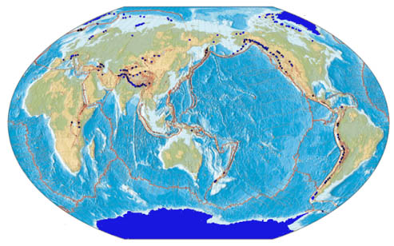
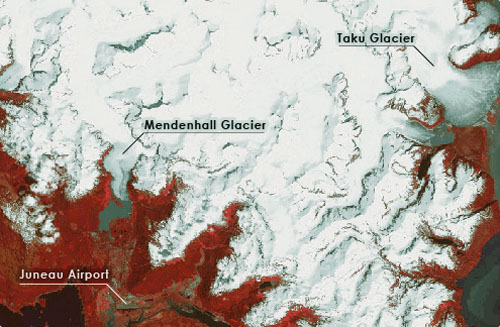

Glaciers are a spectacular and important component of the Polar landscape. Most of the world’s glaciers are found near the Polar Regions.
Glaciers exist where, over a period of years, snow remains after summer's end. There is a delicate balance between climatic factors that allows snow to remain beyond the summer season. (Source: USGS).
The National Snow and Ice Data Center
(NSIDC) maintains an excellent web site with information on glaciers,
including facts and figures. According to this resource
presently, glaciers occupy about ten percent of the world's total land
area and store about 75 percent of the world's freshwater.
|  |
| Global tectonism and distribution of
present day glaciers (shown in dark blue). For an interactive
map of global glacier distribution, visit the world glacial inventory
site and map viewer maintained by NSIDC. Image © National Geographic Society (1996)
|
| About Alaskan Glaciers |
In the United States, glaciers cover over 75,000 square kilometers, with most of the glaciers located in Alaska. North America's longest glacier is the Bering Glacier in Alaska, measuring 204 kilometers long. Glaciologists from the University of Alaska Fairbanks Geophysical Institute have estimated volume changes of more than 70 glaciers across Alaska, from alpine glaciers in the high Arctic to the vast ice sheets of Southeast Alaska and report that the Alaskan glaciers have become significantly thinner in recent years (article in Science). The Mendenhall Glacier is one of the glaciers in southeast Alaska that is rapidly thinning and retreating. Even though this glacier technically falls in the category 'temporate' (non-polar) glaciers, it is selected in this resource due to its affinity to polar landscapes.
|  |
| Landsat Standard False Color
Composite of a part of the Juneau Icefield showing Juneau (Capital of
Alaska), Mendenhall Glacier and the Taku Glacier. Image
processed by Anupma Prakash |
| Significance of Glacier Monitoring |
There is complex relationship between climate and glaciers (Haeberli et al 1989; Oerlemans, 1989). Nearly 100 years of available data on glaciers point towards this complex relationship. Based on the analysis of these data Oerlemans (1994) concludes that with a few exceptions, glaciers have been retreating globally in the last 100 years, which corresponds to trend of recent global warming.
Even though the link between climate change and the response of glaciers involves a complex relationship that is not always well understood, the continuous monitoring of glaciers and ice sheets does serve as a clear indicator of global climatic change.
| Remote Sensing Applications to Study Glaciers |
Remote sensing images acquired from different platforms (satellite, aircraft) using sensors that operate in different spectral regions (visible, infrared, microwave) have been widely used to study glaciers, e.g. to measure ice thickness, surface ice velocities, and changes in surface elevation over time. Remote sensing techniques have been used for spectral characterization of different snow and ice facies, preliminary inventory of glaciers including aerial extent and position of large crevasses, and for mapping and moniting glacial variations especially at the glacier margins and terminus location (Nesje and Dahl, 2000; Williams et al., 1997). The incorporation of satellite-based data can greatly augment traditional ground-based glacier monitoring studies.
In the last three decades several polar orbiting Earth Observing Satellites have provided a temporal archive of medium resolution images (spatial resolution ranging from 5 m to 60 m). The following is a list of the most important satellites and their corresponding sensors that possess great potential for glacial monitoring:
Satellite |
Sensor |
Wavelengths |
Spatial resolution |
Glaciological application |
Landsat | TM | Visible, | 15 m - 30 m | Terminus and area mapping; spectral characteristics of snow and ice |
Terra | ASTER | Visible, | 15 m - 30 m | Terminus and area mapping; DEM for elevation change monitoring |
SPOT | Pan | Visible, | 5 m - 20 m | Terminus and area mapping; |
IRS | Pan | Visible, |
5 m - 72 m | Terminus and area mapping; |
ERS |
SAR |
Microwave |
30 m |
Terminus and area mapping; surface velocity estimation; monitoring elevation change |
Radarsat |
SAR | Microwave | 8 m - 100 m | Terminus and area mapping; surface velocity estimation; monitoring elevation change |
The Satellite Image Atlas of Glaciers of the World (Williams and
Ferrigno, 2002) has used Landsat images from the mid-1970s to
establish baseline information for all the glaciated areas of the
world. Used in conjunction with other remotely sensed, geophysical and
ground-based data, Landsat images can be valuable in monitoring changes
in a glacier’s area and terminus position (Williams and
Ferrigno, 1988). Smaller glaciers may react more rapidly to
climate change, and significant terminus-position changes may occur on
a decadal time-scale (Williams et al., 1997).